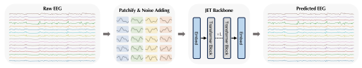
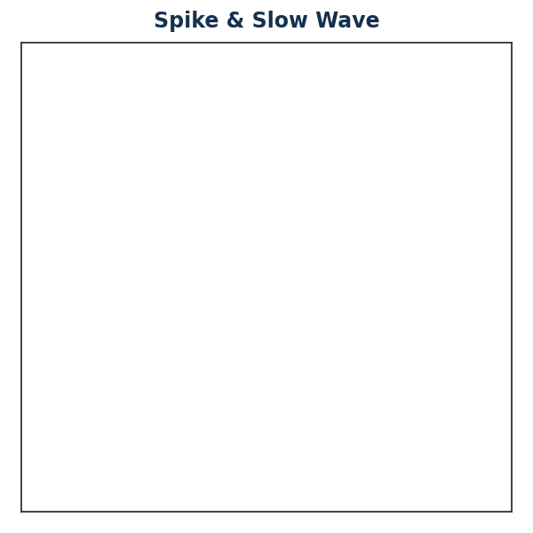
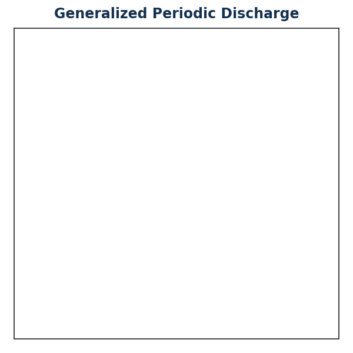
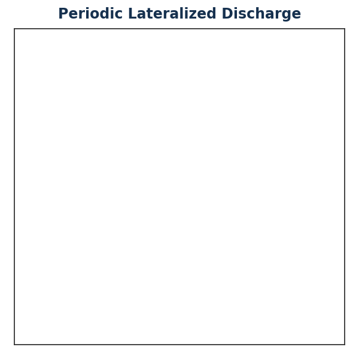
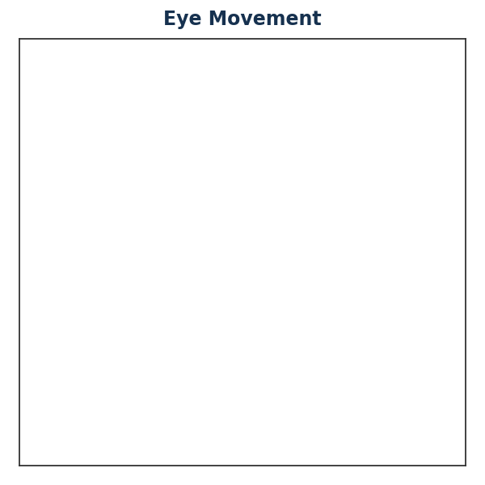
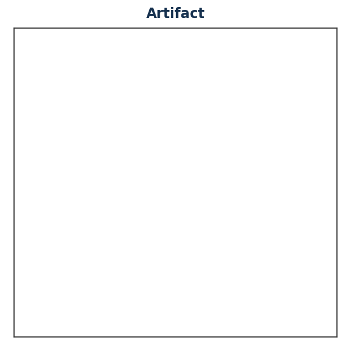
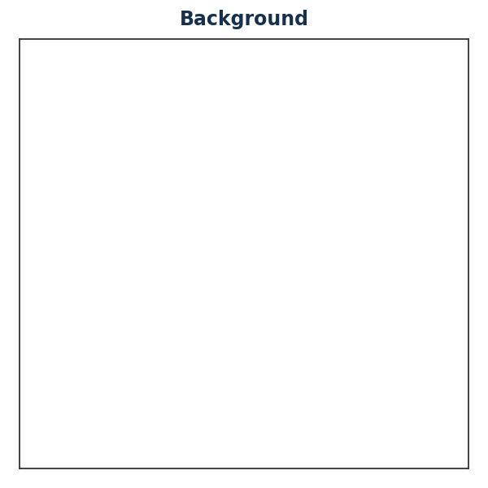
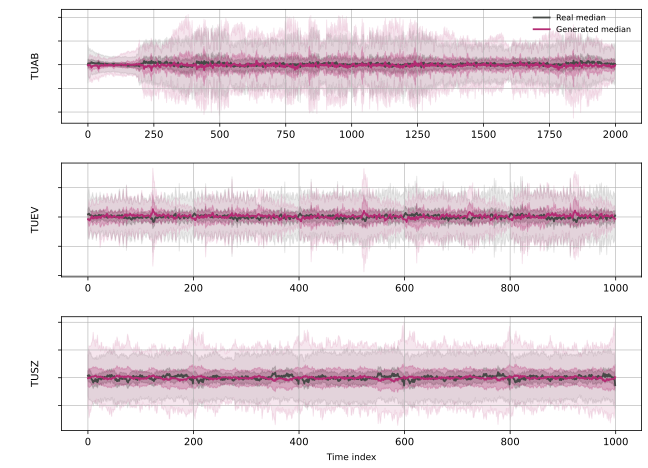
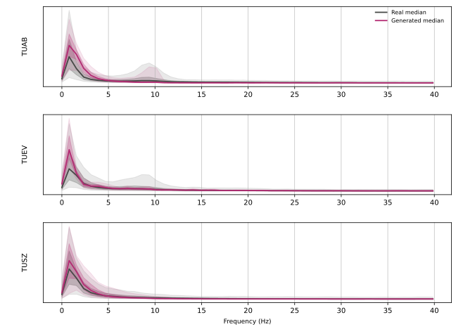

Let EEG Models Learn EEG

JET pipeline. Multi-channel EEG is generated by learning a continuous vector field v(xt, t) via flow matching, conditioned on pathological states and regularized by structure-preserving constraints on spectral, temporal, and statistical properties.
News
Overview
High-fidelity EEG generation is critical for alleviating data scarcity and addressing privacy constraints in large-scale neural modeling.
Despite recent progress, most existing approaches formulate EEG generation via discrete denoising objectives, which inadequately reflect the inherently continuous temporal dynamics and spectral structure of neural activity.
JET is a generative framework based on conditional flow matching that models EEG as raw sequences evolving along continuous trajectories.
- Continuous formulation. Learn a smooth vector field that transports noise to the EEG data distribution without discretized denoising or domain-specific representations.
- Principled constraints. Spectral, temporal-stationarity, and signal-statistics losses keep the learned dynamics consistent with EEG.
- State of the art. Reduces TS-FID by over 40% vs. strong baselines on three large-scale benchmarks.
Method
Architecture

Just EEG Transformer (JET). JET models multi-channel EEG directly as raw continuous sequences, avoiding handcrafted feature extraction such as time frequency transforms or predefined adjacency matrices. Each EEG segment is split into non-overlapping temporal patches along the time axis. Every patch is linearly projected into an embedding while preserving channel identity, and learnable positional embeddings encode temporal order. The resulting token sequence is processed by a stack of standard Transformer blocks with multi-head self-attention and feed-forward layers. Conditioning information, including diffusion time and class label, is injected via adaptive layer normalization, whose scale and shift parameters are predicted from the sum of the time embedding and the class embedding. To handle the severe class imbalance of clinical EEG, JET also uses an adaptive class-balanced sampler that assigns each training sample a probability inversely proportional to its class count, encouraging robust representations of under-represented pathological patterns.

Why flow matching for EEG?
GANs map latent noise directly to data space, which makes training unstable and prone to mode collapse; diffusion models rely on stochastic denoising dynamics that discretize generation into many steps. Flow matching instead learns a smooth, time-dependent vector field whose integral curves realize optimal transport from a dispersed source to the target distribution.
Brain activity is non-stationary, evolving smoothly through a high-dimensional state space. We therefore argue that effective EEG generation requires modeling neural activity as a continuous dynamical process that operates directly on the continuous evolution of neural signals, rather than as a sequence of discrete denoising steps.
Results
Quantitative Comparison
JET consistently outperforms EEG-GAN and Vanilla Diffusion across three large-scale benchmarks (TUAB, TUEV, TUSZ) on generation quality (TS-FID), conditional consistency (Sil.), and downstream utility (Δ Acc).
| Method | TUAB | TUEV | TUSZ | ||||||
|---|---|---|---|---|---|---|---|---|---|
| TS-FID↓ | Sil.↑ | Δ Acc↑ | TS-FID↓ | Sil.↑ | Δ Acc↑ | TS-FID↓ | Sil.↑ | Δ Acc↑ | |
| EEG-GAN | 324.18 | 0.786 | +0.000 | 448.65 | 0.667 | −0.004 | 274.37 | 0.891 | +0.001 |
| Vanilla Diffusion | 342.91 | 0.710 | −0.002 | 415.82 | 0.703 | +0.000 | 300.47 | 0.746 | +0.000 |
| JET (Ours) | 188.27 | 0.995 | +0.029 | 235.86 | 0.983 | +0.032 | 151.27 | 0.987 | +0.017 |
Generated Samples
Qualitative visualization of EEG segments generated by JET on TUEV, shown for each of the six event classes. For every class we display the generated sample whose multi-channel waveform best matches its corresponding ground-truth recording. Each animation sweeps through a 5 second, 16-channel bipolar montage, illustrating that JET reproduces class-characteristic morphology — from sharp spike-and-slow-wave complexes to high-amplitude eye-movement and artifact transients.






Physiological Analysis
To go beyond aggregate metrics and assess whether JET preserves key physiological structure, we conduct a fine-grained analysis along three fundamental dimensions: spectral structure, temporal dynamics, and statistical distributions. Together, these analyses examine whether the proposed constraints effectively address the limitations observed in prior generative paradigms.
We first examine whether JET preserves the power-law spectral structure (1/f^χ) and low-energy high-frequency components of EEG signals. Conventional objectives often suppress these components due to spectral bias, leading to oversmoothed generations. The figure compares the power spectral density (PSD) of generated and real signals, revealing strong alignment across frequency bands.

(1) Low-Frequency Precision (δ-band). In the 0 to 5 Hz range, which contains high-amplitude pathological slow waves and fundamental background rhythms, the generated spectra closely follow the ground truth across all datasets.
(2) Structural Preservation in Mid-Frequencies. In the α-band (8 to 13 Hz), especially in TUAB and TUEV, JET reproduces distinct α-band peaks rather than collapsing to a smooth 1/f profile, demonstrating that the model captures structured oscillatory activity beyond global spectral trends.
(3) High-Frequency Selectivity. For frequencies above 15 Hz (β/γ bands), generated spectra exhibit mild attenuation relative to the ground truth, reflecting selective suppression of unstructured high-frequency components while retaining coherent neural activity.
We examine whether JET captures non-stationary temporal dynamics while avoiding pathological drift over long sequences. The figure shows the temporal evolution of signal envelopes, indicating that the generated signals maintain stable amplitude statistics over time without baseline drift or variance explosion.

(1) Baseline Stability. The median of the generated signals remains centered around the real signals throughout the entire time course across all datasets, indicating that the model successfully prevents baseline drift.
(2) Consistent Variance Structure. The inter-percentile bands remain aligned with the real bands within the window; unlike baselines that suffer from error accumulation, the flow-based approach preserves the signal's energy profile consistently over time.
(3) Envelope Alignment. The generated variance envelope closely tracks the ground truth. Notably in TUEV, where the real data exhibits bursty high-amplitude transients, the generated distribution's outer quantiles effectively cover these regions.
Finally, we investigate the alignment with the heavy-tailed, non-Gaussian distributions typical of pathological populations, ensuring the model avoids mode collapse. We analyze marginal amplitude density and population-level spectral stability.

(1) Heavy-Tail Reconstruction. Within the valid signal window, the generated log-density exhibits strong alignment with the ground truth. The model accurately reproduces both the sharp central peak and the heavy-tailed decay of the amplitude distribution, demonstrating accurate modeling of EEG signal statistics without being dominated by sparse outlier noise.

(2) Avoidance of Mode Collapse. The substantial overlap between the generated and real confidence intervals confirms that the model avoids mode collapse. The generated samples exhibit a wide dispersion in spectral power, mirroring the inter-subject and inter-state variability found in the ground truth, rather than converging to a single deterministic profile.
(3) Frequency-Dependent Stochasticity. The model correctly learns the natural stochasticity of slow-wave activities (below 5 Hz), matching the real confidence intervals with high precision. Conversely, in higher frequencies, the generated distribution exhibits a slightly narrower spread, reflecting a conservative constraint that prioritizes robust neural features over sporadic, high-variance artifacts or noisy recording conditions.
Citation
@article{wang2026let,
title = {Let EEG Models Learn EEG},
author = {Wang, Yifan and Ma, Yijia and Li, Wen and You, Chenyu},
journal = {ICML},
year = {2026}
}